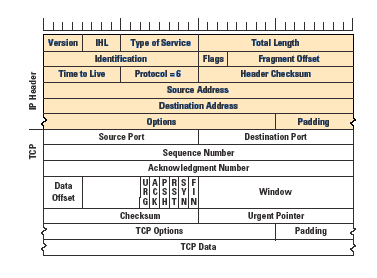
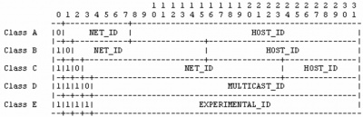

List content :
- Internet Protocol
- Format IP address
- Bentuk biner
- Bentuk dotted decimal
- IP address dan artinya
- IP Address, Subnetmask dan Subnetting
- Dunia Menurut RFC 950 – Cara Lama
- Pengalokasian IP address
- Aturan dasar pemilihan network ID dan host ID
- Contoh konfigurasi Valid dan Tidak Valid
- Konfigurasi Network Interface
- Mendefinisikan interface
- Menyalakan dan mematikan interface
- Dunia Menurut RFC 1812 – Cara Baru
- Subnetting, Bit By Bit
- Aritmatika Biner
- Logika Boolean dan Operasi Biner “AND”
- Subnet “Mask”
- Notasi “Slash”
- Trik Menghitung Subnet
- Trik Mengetahui Range Address di Jaringan
- Penghematan IP address NAT dan PAT
- Alokasi IP Addess Secara Dinamis
- Cara Beroperasi DHCP
- Membangun DHCP Server di Linux
Internet Protocol
-

- Version : berisi versi Internet Protocol (IP) (4 bit). Versi yang sering digunakan pada hari ini adalah IP versi 4, maka kolom ini akan berisi 0100. Sebetulnya, ada banyak versi IP dan ini di terangkan di IANA List of IP Version Numbers. (http://www.iana.org/assignments/version-numbers). Perkembangan lebih lanjut akan menggunakan IP versi 6 (IPv6).
- Internet Header Length (IHL) : Mengindikasikan panjang dari datagram header dalam 32 bit (4 oktet) word. Panjang minimum header adalah 20 oktet, oleh karena itu kolom ini akan mempunyai nilai minimum 5 (0101). Karena nilai maksimum dari kolom ini adalah 15, maka IP header tidak mungkin lebih panjang dari 60 oktet.
- Type of Service (TOS) : memungkinkan bagi host pengirim paket untuk meminta perbedaan kelas dalam mengirimkan paket. Walaupun tidak sepenuhnya di dukung oleh IPv4 yang banyak digunakan hari ini. Kolom TOS memungkinkan host pengirim meminta servis berbeda di lapisan transport / lapisan internet, dan dapat menspesifikasikan prioritas (0-7), atau dapat meminta route yang di optimisasi berdasarkan biaya, delay, throughput, atau keandalan.
- Total Length : mengindikasikan panjang (dalam byte, atau oktet) dari keseluruhan paket, termasuk header dan data.Karena keterbetasan panjang kolom ini, maka panjang maksimum IP paket adalah 64KB, atau 64,535 byte. Pada praktisnya panjang paket di batasi oleh maximum transmission unit (MTU).
- Identification : digunakan jika sebuah paket dipotong-potong menjadi potongan yang lebih kecil pada saat dikirim pada salah satu subnetwork yang dilewati. Dengan identifikasi ini, potongan-potongan paket yang diterima router tujuan dapat mengassembling kembali menjadi sebuah paket utuh kembali.
- Flags : juga digunakan pada proses pemotongan / fragmentasi dan reassembly. Bit pertama disebut More Fragments (MF) bit, dan digunakan untuk memberi tanda pada potongan akhir dari paket sehingga bagian penerima tahu bahwa potongan paket yang diterima dapat di reassimbly. Bit kedua disebut Don't Fragment (DF) bit, yang akan meniadakan proses pemotongan paket. Bit ke tiga tidak digunakan dan selalu di set ke 0.
- Fragment Offset : menunjukan posisi potongan dari paket yang awal. Potongan pertama dari sebuah paket, akan bersisi offset yang sama dengan 0.Potongan selanjutnya akan ditunjukan oleh offset dengan kenaikan 8 byte.
- Time-to-Live (TTL) : mempunyai nilai antara 0 sampai 255 (8 bit). TTL menunjukan berapa hop / router yang di ijinkan untuk dilewati oleh paket sebelum paket tersebut akan dibuang dari jaringan. Setiap router yang dilewati akan mengurangi nilai TTL satu (1) buah, jika nilai TTL mencapai 0 maka paket akan automatis dibuang dan router terakhir akan mengirimkan paket ICMP time excedeed. Hal ini dilakukan untuk mencegah paket IP terus menerus berada didalam network.
- Protocol : menunjukan protokol yang dibawa diatas Internet Protocol, pilihan yang ada termasuk ICMP (1), TCP (6), UDP (17), atau OSPF (89). Daftar lengkap nomor protocol ini dapat dilihat di IANA list of Protocol Numbers (http://www.iana.org/assignments/protocol-numbers) Daftar ini juga dapat dilihat di file protocol yang biasanya ada di /etc (Linux/Unix), c:\windows (Windows 9x, ME, XP), atau c:\winnt\system32\drivers\etc (Windows NT, 2000).
- Header Checksum : berisi informasi yang menjamin agar header IP bebas dari error (16 bit). Perhatikan bahwa IP memberikan servis yang tidak reliable, oleh karena ini kolom ini hanya mencek header saja, bukan keseluruhan paket.
- Source Address : IP address dari host pengirim paket (32 bit)
- Destination Address : IP address dari host yang dituju oleh paket (32 bit)
- Options : option yang dapat diberikan ke sebuah paket yang dikirim, seperti routing yang
khusus, atau keamanan. Daftar option dapat sampai dengan 40 byte (10 word), dan akan diisi
untuk memenuhi batas word. Daftar IP option dapat diperoleh dari IANA list of IP Option
Numbers (http://www.iana.org/assignments/ip-parameters). Beberapa contoh options adalah:
- Strict Source Route. Berisi daftar lengkap IP address dari router yang harus dilalui oleh paket ini dalam perjalanannya ke host tujuan. Selain itu paket balasan atas paket ini,yang mengalir dari host tujuan ke host pengirim, diharuskan melalui router yang sama.
- Loose Source Route. Dengan mengeset option ini, paket yang dikirim diharuskan singgah di beberapa router seperti yang disebutkan dalam field option ini. Jika diantara kedua router yang disebutkan terdapat router lain, paket masih diperbolehkan melalui router tersebut.
Format Internet Prototol (IP) header tampak pada gambar. Format dari diagram konsisten dengan RFC, bit berurut dari kiri-ke-kanan dimulai dari nol. Setiap baris merepresentasikan sebuah word 32-bit. Perlu diperhatikan bahwa header IP akan paling tidak panjangnya 5 word (20 byte). Kolom di header, dan fungsinya adalah sebagai berikut:
IP address dan artinya
-
Jika dilihat dari bentuknya, IP address terdiri dari 4 buah bilangan biner 8 bit. Nilai terbesar dari bilangan biner 8 bit ialah 255 (= 2^7 + 2^6 + 2^5 + 2^4 + 2^3 + 2^2 + 2^1 + 2^0). Karena IP address terdiri dari 4 buah bilangan 8 bit, maka jumlah IP address yang tersedia ialah 255 x 255 x 255 x 255. IP address sebanyak ini harus dibagi bagikan ke seluruh pengguna jaringan internet di seluruh dunia.
Untuk mempermudah proses pembagiannya, IP address dikelompokkan dalam kelas kelas. Dasar pertimbangan pembagian IP address ke dalam kelas-kelas adalah untuk memudahkan pendistibusian pendaftaran IP address. Dengan memberikan beberapa blok IP address kepada ISP (Internet Service Provider) di suatu area diasumsikan penanganan komunitas lokal tersebut akan lebih baik, dibandingkan dengan jika setiap pemakai individual harus meminta IP address ke otoritas pusat, yaitu Internet Assigned Numbers Authority (IANA).
IP Address, Subnetmask dan Subnetting
-
Sebetulnya ada dua (2) aturan teknik subnetting di jaringan TCP/IP. Aturan yang awal adalah RFC 950, aturan yang baru dapat dilihat di RFC 1812.
Dunia Menurut RFC 950 – Cara Lama
Untuk IPv4, panjang total sebuah IP address adalah 32 bit. Hal ini tidak berlaku di IPv6 yang mempunyai address space lebih panjang lagi. Biasanya IP address ditulis dalam kumpulan empat (4) nomor merepresentasikan nilai desimal dari address byte (8 bit). Setiap nilai di pisahkan dengan titik, notasi ini dikenal sebagai dotted decimal (desimal bertitik). Contoh IP address adalah 202.159.123.23.IP address sebetulnya mempunyai hirarki untuk keperluan routing, dan biasanya dibagi menjadi dua sub-kolom. Network Identifier (NET_ID) memberitahukan TCP/IP subnet yang tersambung ke Internet. NET_ID digunakan untuk routing antar jaringan, dalam dunia telepon kira-kira sama seperti kode negara, kode wilayah, kode kota, kode operator dari nomor pesawat telepon yang kita gunakan. Host Identifier (HOST_ID) menentukan host tertentu di dalam subnetwork; dalam dunia telepon kira-kira sama dengan nomor pesawat telepon.
Untuk memudahkan membayangkan konsep IP address, mari kita lihat persamaan konsep IP address dengan nomor telepon. Contoh, sebuah nomor telepon Jakarta 021 421-4567. NET_ID untuk telepon di Jakarta adalah 021, sedang HOST_ID atau pesawat teleponnya 421-4567. Tentunya jaringan telepon di Jakarta lumayan rumit dengan di layani dengan beberapa sentral telepon, khusus untuk pesawat 421-xxxx sebetulnya dilayani sentral telepon Cempaka Putih. Jadi sebetulnya kita dapat pecah lagi menjadi NET_ID 021, SUBNET_ID 421 dan HOST 4567. Dengan cara ini akan memudahkan bagi operator telepon untuk melakukan routing sambungan telepon antar sentral telepon. Setiap sentral telepon cukup mencocokan NET_ID atau SUBNET_ID saja untuk mencapai pesawat telepon yang di tuju. Dengan cara / konsep yang sama IP address bekerja. 
Pengalokasian IP address
Contoh konfigurasi Valid dan Tidak Valid
Konfigurasi Network Interface
Mendefinisikan interface
Menyalakan dan mematikan interface
Dunia Menurut RFC 1812 – Cara Baru
Subnetting, Bit By Bit
Aritmatika Biner
-
Seperti kita ketahui bahwa komputer merepresentasikan semua angka sebagai “bit”, atau “nol dan satu”. Komputer bekerja dengan group delapan bit (0 atau 1) yang biasa di sebut “byte”. Kebanyakan desktop PC akan memproses bilangan empat (4) byte, atau 32 bit, dalam satu saat. Oleh karena itu prosesor 80386 sampai Pentium IV di kenal sebagai prosesor 32 bit. Mari kita ingat kembali waktu guru kita di Sekolah Dasar menjelaskan tentang sistem penomoran desimal. Di sebut desimal (asal kata Latin – decima – yang berarti sepuluh bagian), karena menggunakan angka dari nol hingga sembilan. Jika kita membutuhkan angka yang besar maka kita harus menambahkan tambahan digit. Kemudian di kenalkan konsep satuan, puluhan, ratusan, ribuan dsb.
Sebagai contoh, 45678 mempunyai :
4 Puluhan ribu
5 Ribuan
6 Ratusan
7 Puluhan
8 SatuanKarena komputer hanya bekerja dengan bilangan biner, dan hanya mempunyai “0” dan “1” untuk bekerja, mereka harus menambahkan digit baru jika mereka melebihi nomor satu. Dalam bilangan desimal, kita mengenal pangkat dari sepuluh, yaitu:
10^0=1,
10^1=10,
10^2=100,
10^3=1000, dst.Dalam bilangan biner, kita mengenal pangkat dari dua, yaitu:
2^0=1 (1 biner),
2^1=2 (10 biner),
2^2=4 (100 biner),
2^3=8 (1000 biner),
2^4=16 (10000 biner),
2^5=32 (100000 biner),
2^6=64 (1000000 biner),
2^7=128 (10000000 biner),
2^8=256 (100000000 biner), dst. Oleh karenanya bilangan 45678 desimal, dalam bilangan biner akan di representasikan sebagai berikut.
32768 | 16384 | 8192 | 4096 | 2048 | 1024 | 512 | 256 | 128 | 64 | 32 | 16 | 8 | 4 | 2 | 1
1 | 0 | 1 | 1 | 0 | 0 | 1 | 0 | 0 | 1 | 1 | 0 | 1 | 1 | 1 | 0Atau dalam bentuk bilangan biner adalah 1011001001101110 yang merupakan jumlah dari 32768 plus 8192 plus 4096 plus 512 plus 64 plus 32 plus 8 plus 4 plus 2 sama dengan 45678. Menghitung sampai dua puluh dalam biner adalah sebagai berikut :
Decimal Binary Decimal Binary
1 1 11 1011
2 10 12 1100
3 11 13 1101
4 100 14 1110
5 101 15 1111
6 110 16 10000
7 111 17 10001
8 1000 18 10010
9 1001 19 10011
10 1010 20 10100IP address versi 4 adalah empat (4) byte, masing-masing delapan (8) bit, di representasikan dengan angka desimal dengan titik diantaranya. Contoh:
10.5.72.230di representasikan dalam angka biner 32-bit sebagai
00001010.00000101.01001000.11100110.Bayangkan, 232 adalah 4294967296, atau lebih sedikit dari empat milyar alamat yang tersedia untuk digunakan di dunia. Tapi mengapa kita akan kekurangan IP address? Perkiraan terakhir, kita akan kekurangan IP address sekitar tahun 2025. Ternyata masalah utama-nya adalah untuk mengetahui dimana lokasi empat milyar host cukup mustahil dengan menggunakan peralatan yang ada pada hari ini.
Teknik routing yang digunakan terlalu sederhana, dengan membagi IP address menjadi “class”.
Dengan IP address yang byte pertama antara 1-126 termasuk kelas A dengan 16,777,214 (224-2) host.
Kelas A mempunyai 8 bit bagian network (NET_ID), dan 24 bit bagian host (HOST_ID).
IP address dengan byte pertama 128-191 termasuk kelas B dengan 65,534 (216-2) host, dan ada 16,384 network kelas B (dari (192-128)*256). Dengna 16 bit bagian network (NET_ID), dan 16 bit bagian host (HOST_ID).
Network kelas C, mempunyai byte pertama antara 192-223, dengan 24 bit bagian network (NET_ID), dan 8 bit bagian host (HOST_ID).
Semua dapat secara sederhana di tuliskan sebagai berikut:
Kelas Network bit Network Mask Network Mask (biner)
A 8 255.0.0.0 11111111.00000000.00000000.00000000
B 16 255.255.0.0 11111111.11111111.00000000.00000000
C 24 255.255.255.0 11111111.11111111.11111111.00000000
Tentunya tidak ada satu orang network administrator-pun di dunia yang bersedia meng-admin-i 16,777,214 dalam sebuah segmen jaringan. Network admin biasanya akan memotong jaringan mereka dengan melakukan subnetting. Ujungnya adalah di alokasi multiple kelas C untuk memenuhi kebutuhan sebuah jaringan.
Logika Boolean dan Operasi Biner “AND”
Subnet “Mask”
-
Contoh subnetmask yang sering dipakai
CIDR Desimal Jumlah Mesin
/30 255.255.255.252 4
/29 255.255.255.248 8
/28 255.255.255.240 16
/27 255.255.255.224 32
/26 255.255.255.192 64
/25 255.255.255.128 128
/24 255.255.255.0 256
/16 255.255.0.0 65.536
/8 255.0.0.0 16.777.216Notasi “Slash”
Trik Menghitung Subnet
-
Semoga anda semua sekarang memahami filosofi aritmatika biner di balik perhitungan subnetmask. Pada bagian ini, akan di terangkan beberapa trik perhitungan subnet.
Untuk menyederhanakan masalah, ada baiknya kita fokus pada subnet mask yang dimulai dengan “255.255.255”, yang sebetulnya cukup untuk sebuah jaringan yang kecil.
Hanya ada tujuh (7) nilai yang mungkin di oktet terakhir dari subnet mask, yaitu, 0, 192, 128, 224, 240, 248, dan 252.
11111100 : 252
11111000 : 248
11110000 : 240
11100000 : 224
11000000 : 192
10000000 : 128
00000000 : 0Kita juga dapat menentukan ada berapa subnet yang akan di peroleh dari subnetmask tertentu dengan cara membagai 256 dengan jumlah host yang ada di subnet. Contoh subnetmask 255.255.255.224 yang mempunyai 32 host, maka jumlah subnet yang akan di peroleh dari sebuah network kelas C adalah 8 buah (dari 256/32=8).Tentunya, ini semua hanya berlaku jika angka-nya adalah kelipatan dua, seperti, 1, 2, 4, 8, 16, 32, 64, atau 128.
Jika bagian network / network prefix / NET_ID lebih besar dari kelas C. Kita dapat mengetahui berapa banyak network kelas C yang ada, dengan cara mengurangkan byte ke tiga dari subnetmask dengan 256.Contoh subnetmask 255.255.240.0 merupakan kumpulan dari 16 network kelas C (dari 256-240=16).